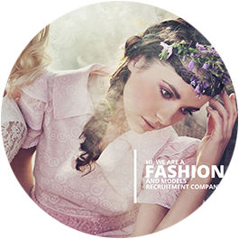

个人简介
基本信息
姓名：刘欣苹
Q Q：85707682
专业：web前端
爱好:喜欢听歌，唱歌，散步。
专业技能
1.JavaScript
2.html5
3.Bootstrap
4.css3
能力
根据自身特点发挥自己的特长
，同时要有过硬扎实基本功的真
才实学。专业技能强、上进、
好学;真诚、守时； 有团队合
作意识、良好的沟通能力和亲
和力；善于学习，积极主动解
决困难的态度和能力； 良好组
织能力和协调管理能力，有很
强的执行力，等等
目标规划
规划一
通过大学两年高效性,综合化的学习,把自己培成为具有深厚知识基础
规划二
刻苦训练,开发潜能,积极参加各种竞赛
规划三
培养良好的生活习惯,合理安排时间此外,还应调整生活方式
规划四
尽快转变思维方式,培养批判性,创造性和系统化的思考能力,
大量查阅相关文献资料